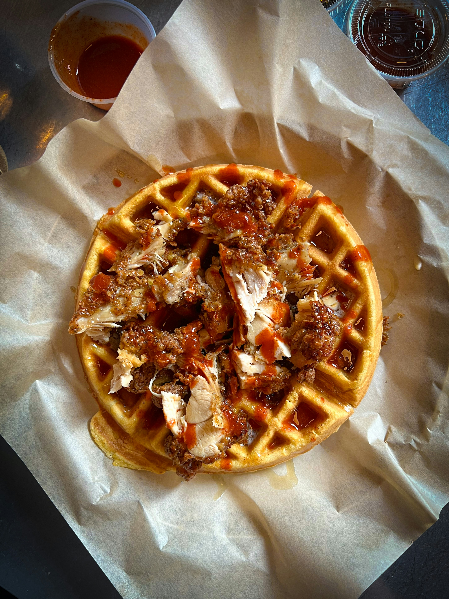

Chicken and Waffles
A delicious blend of crispy chicken and fluffy waffles, served with syrup for the perfect sweet and savory breakfast!
Ingredients: Chicken, waffles, syrup, eggs, flour, buttermilk.
Instructions: Fry the chicken until crispy and golden. Serve on top of warm waffles and drizzle with syrup.
Back to Breakfast Recipes